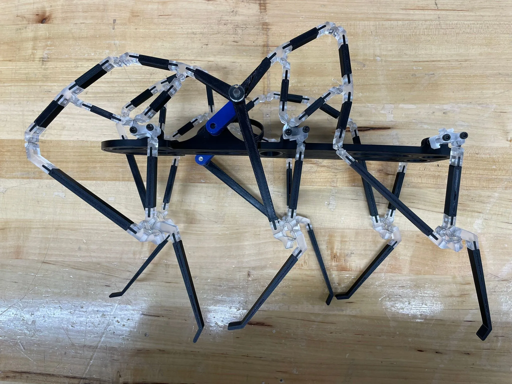
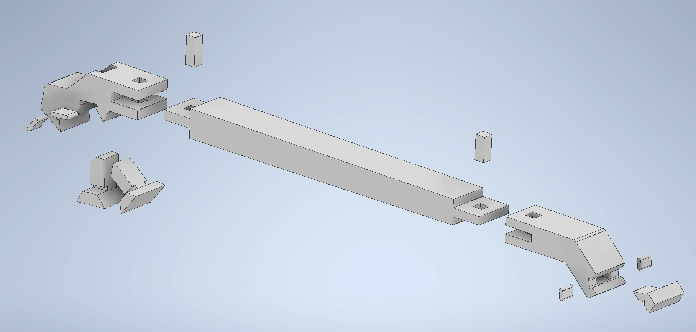
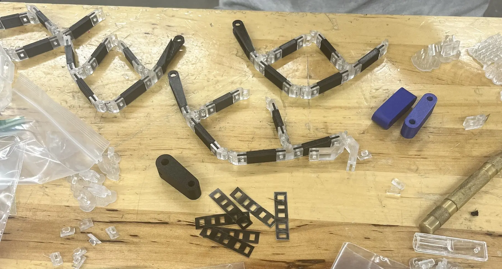

Stair-Climbing Robot

Robot Mechanism Design Final Project
A compliant mechanism designed to climb stairs, made with 551 custom parts and a 5-link leg mechanism. Focused on joint design and material selection to achieve a lightweight and efficient robot capable of replicating complex motion paths.
Project Summary
This project engineered a 1-DOF stair-climbing robot initiating from 30° slanted stairs. We developed a custom 5-link leg mechanism optimized for stair geometry, prioritizing step clearance and stability. Through iterative prototyping, we evolved from failed TPU concepts to laser-cut film joints captured within resin components. The final 0.81 lb robot integrated 551 custom parts and replicated ideal leg trajectories, but couldn't climb due to joint deformation under load and insufficient motor torque.
Project Overview
General Design Philosophy
Compliant joints formed our breakthrough innovation, enabling an 80% weight reduction compared to bearing-based joints while eliminating shear forces through in-plane flexion. Each joint served as a self-contained motion system, maintaining precise kinematics without metal components. Though stair climbing was unrealized, the mechanism's replication of complex 5-link motion validated compliant joints as a transformative alternative to traditional assemblies - a significant achievement in minimalist mechanism design.
Mechanism Design
Our 5-link mechanism was inspired by an unnamed biomimetic system. Beginning with approximate dimensions, we iteratively refined link lengths to achieve three critical features: sustained flat ground contact during 50% of the cycle, reliable step-clearing profiles matching 30° stairs, and minimized joint angles to reduce film stress.
Joint design required exhaustive angle-range analysis. For each joint, we calculated minimum and maximum angles through kinematic simulations, engineered bisecting clamps spanning the complete motion arc, and ultimately adopted wood joinery-inspired interlocks that outperformed other designs in strength and reliability after multiple iterations.
Fabrication & Assembly
Geometric dimensioning and tolerancing became critical at microscopic scales. SLA-printed joints achieved 50μm resolution, but curing variations caused dimensional drift requiring meticulous process control. Laser-cut film maintained ±0.05mm consistency - essential for 0.5mm-wide inserts. Post-processing proved vital with UV curing times optimized to minimize warping.
Material selection balanced precision and practicality: SLA resin provided tight tolerances for joint clamps, FDM PLA with 5% infill optimized weight for structural links, and 0.2mm polyester film delivered edge consistency for flexures. This multi-material approach reduced resin usage by 60% while maintaining strength.
Micro-assembly demanded magnification tools to align 0.2mm films between resin components. Snap-fit stainless steel inserts secured interfaces, with each leg's 29 components requiring precision assembly.
Results & Limitations
The robot achieved exceptional 1.7mm path-tracking accuracy, confirming the compliant joint concept. However, three fundamental limitations emerged: film joints failed at 0.82N·m (54% of required torque), adequate motors compromised joint integrity through added weight, and stability margins measured just 12° versus our 30° target. These interconnected challenges prevented stair climbing despite perfect kinematic performance.
Key Achievement: Despite not achieving full stair climbing capability, the project successfully validated the compliant joint concept, demonstrating that complex motion can be achieved without traditional bearings or metal components, while reducing weight by 80% compared to conventional designs.
Key Takeaways & Skills Utilized
This project demonstrated that compliant joints require simultaneous mitigation against shear, peel, and tension failure modes. We learned that motor selection must precede joint design for proper load matching, and that SLA processes require statistical tolerance analysis for microscale components.
Lesson Learned: The project highlighted the critical importance of early joint strength validation and motor-weight tradeoffs. The 551-part assembly revealed challenges in Design for Manufacturing and Assembly (DFMA), where reducing part count would significantly improve future iterations.
Key Skills Developed
- Kinematic Analysis
- Compliant Joint Design
- Multi-material 3D Printing
- SolidWorks Simulation
- Micro-Tolerance GD&T
- Finite Element Analysis
- Prototype Iteration
- Design for Manufacturing
Additional Information
Project Details & Resources
More information about the project can be found in the wiki below. For detailed technical specifications, CAD files, or project documentation, please contact Inoo Jo
Robot Mechanism Design Wiki